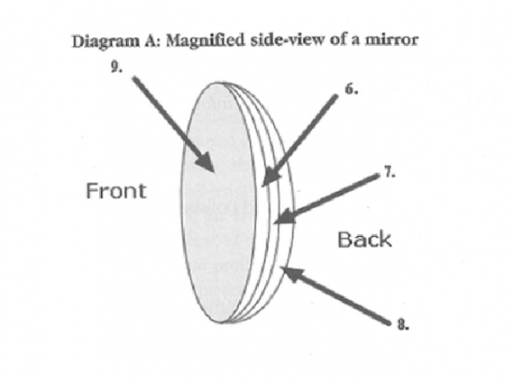

In all likelihood the first mirrors would have simply been pools of water that reflected the image of the one who looked into it. Nature’s mirror, while cheap and readily accessible, must have also been quite frustrating with the slightest disturbance on the surface of the water making it difficult to see clearly. It is not altogether clear when the first man-made mirrors were produced but mirrors made of brass are mentioned in the Bible, and after that mirrors of bronze were in common use among the ancient Egyptians, Romans and Greeks. In addition to bronze, the Greeks and Romans experimented with polished silver to produce simple mirrors.
Crude forms of glass mirrors were first made in Venice in 1300. Small sheets of glass were cut from disks made by a spinning process. When this glass was backed with a covering of tin or lead, a ‘mirror’ resulted. During the early periods of their development, mirrors were rare and expensive. France had glass factories but only in Venice, Italy was the secret of mirror foiling know n. The chemical process of coating a glass surface with metallic silver was discovered by German chemist Justus von Liebig in 1835, and this advance inaugurated the modern techniques of mirror making.
By the end of the 17th century mirrors were made in Britain and the manufacture of mirrors developed subsequently into an important industry in many other European countries. People wore them in their hats, or set them like jewels in their rings. Society glittered and shone like the firmament. A little later on, America was gripped by the mirror craze, only this time they wore interested in larger mirrors. In house after house in residential districts and eastern cities there could be found one long mirror after another placed between two front parlour windows.
In the manufacture of mirrors today, plate glass is cut to size, and all blemishes are removed by polishing with rouge. The glass is scrubbed and flushed with a reducing solution before silver is applied. The glass is then placed on a hollow, cast-iron tabletop, covered with felt, and kept warm by steam. A solution of silver nitrate is poured on the glass and left undisturbed for about 1 hour. The silver nitrate is reduced to a metallic silver and a lustrous deposit of silver gradually forms. The deposit is dried, coated with shellac, and painted. Most present-day mirrors therefore, are made up of these layers. Glass is used on top because it is smooth, clear, and protects the reflective surface. A mirror needs to be very smooth in order for the best reflection to occur.
Mirrors may have plane or curved surfaces. A curved mirror is concave or convex depending on whether the reflecting surface faces toward the centre of the curvature or away from it. Curved mirrors in ordinary usage have surfaces of varying shapes. Perhaps the most common is spherical. Spherical mirrors produce images that are magnified or reduced – exemplified, by mirrors for applying facial makeup and by rear-view mirrors for vehicles. Cylindrical mirrors are another common type of shape. These focus a parallel beam flight to a linear focus. A paraboloidal mirror is one which is often used to focus parallel rays to a sharp focus, as in a telescope mirror, or to produce a parallel beam from a source at its focus, such as a searchlight. A less common but useful shape is the ellipsoidal. Such a mirror will reflect light from one of its two focal points to the other.
While the mirror is the focus of the production, the frame plays an important albeit slightly lesser role as the anchor by which the mirror is affixed to its proper place. From the late 17th century onward, mirrors and their frames played an increasingly important part in the decoration of rooms. Complementing the shiny reflective mirror, the early frames were usually of ivory, silver, ebony, or tortoiseshell or were veneered with walnut, olive, and laburnum. Needlework and bead frames were also to be found. Craftsmen such as Grinling Gibbons often produced elaborately carved mirror frames to match a complete decorative ensemble. The tradition soon became established of incorporating a mirror into the space over the mantelpiece; many of the early versions of these mirrors, usually known as overmantels, were enclosed in glass frames. The architectural structure of which these mirrors formed a part became progressively more elaborate. Focusing heavily on the effect created by mirrors, 18th century designers such as the English brothers Robert and James Adam created fireplace units stretching from the hearth to the ceiling. Oil the whole, mirror frames reflected the general taste of the time and were often changed to accommodate alterations in taste – frames usually being cheaper and hence more easily replaced than the mirror itself.
By the end of the 18th century, painted decoration largely supplanted carving on mirrors, the frames being decorated with floral patterns or classical ornaments. At the same time the French started producing circular mirrors. Usually surrounded by a neoclassical gilt frame that sometimes supported candlesticks, these mirrors enjoyed great popularity well into the 19thImproved skill in mirror making also made possible die introduction of the cheval glass, a freestanding full-length mirror, supported on a frame with four feet. These were mainly used for dressing purposes, though occasionally they had a decorative function. New, cheaper techniques of mirror production in the 19th century led to a great proliferation in their use. Not only were they regularly incorporated into pieces of furniture – such as wardrobes and sideboards – they were also used in everything from high-powered telescopes to decorative schemes in public places. Their popularity continues today. Through them, infants are able to develop an awareness of their individuality through ‘mirror games’. This type of emotional reflection stimulates babies to move various parts of their body and even promotes verbal utterances.
Do the following statements reflect the claims of the writer in Reading Passage 1?
In boxes 1-5 on your answer sheet write
TRUE if the statement agree with the information
FALSE if the statement contradicts the information
NOT GIVEN if there is no information on this
1 .The Creeks arid Egyptians used polished silver to make mirrors.
2 .The first man-made mirrors were made of bronze.
3 .Only the wealthy could afford the first mirrors.
4 .The first mirrors in America were used for decoration.
5 .Spherical mirrors are commonly used in cars.
Complete the labels on Diagram A below.
Write the correct letter A-J in boxes 6-9 on your answer sheet.
Diagram A: Magnified side-view of a mirror

A. rouge
B. cast iron
C. felt
D. steam
E. shellac
F. glass
G. metal
H. silver nitrate paint
I. reducing solution
6
7
8
9
Choose the correct letter A, B, C, or D.
Write your answers in boxes 10-13 on your answer sheet.
10. The type of mirror used for looking at the stars is
A . paraboloidal.
B .spherical.
C . cylindrical.
D . ellipsoidal.
11. 17th century craftsmen
A . blended mirror frames well with other household furniture.
B . hung mirrors above fireplaces.
C . used mirror frames as a focus for home decoration.
D . established floral patterns as a standard for mirror frames.
12. 18th century craftsmen
A . designed furniture which highlighted the unique properties of mirrors.
B . experimented largely with mirror frames made of ebony and ivory.
C . built spherically-shaped minors.
D . experimented with ceiling mirrors around fireplaces.
13. 19th century craftsmen
A . used mirrors less than any previous time in history.
B . introduced mirrors as learning tools.
C . used mirrors extensively in bedroom furniture.
D . etched designs into mirrors.
Please Submit to view your score, solution and explanations.